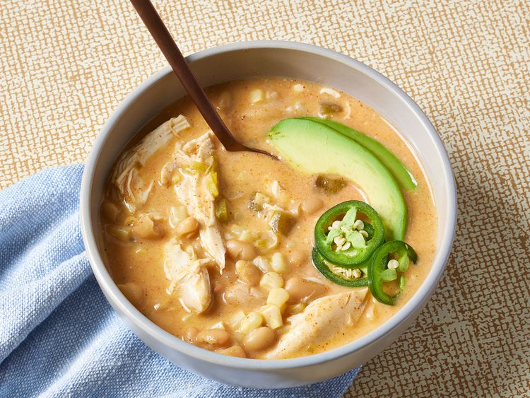

Award-Winning White Chicken Chili

Ingredients
- 1 (14 ounce) can chicken broth
- 1 (10.5 ounce) can condensed cream of chicken soup
- 1 (4 ounce) can chopped green chile peppers
- 1 (1.25 ounce) package taco seasoning
- 1¼ pounds skinless, boneless chicken breast
- 2 (15 ounce) cans great northern beans
- 1 (15 ounce) can white corn, drained
- ½ cup sour cream
- ½ cup shredded pepper Jack cheese, or to taste
Directions
- Gather the Ingredients.
- Layer chicken,great northern beans, and corn in a slow cooker.
- Mix chicken broth, condensed soup, chile peppers, and taco seasoning together in a bowel.
Pour broth mixture over top.
- Cover and cook on Low until chicken is no longer pink in the center and the juices run clear, 8 to 10 hours. An instant-read thermometer inserted into the center should read at least 165 degrees F (74 degrees C).
- Transfer chicken to a cutting board. Shred with two forks or cut into bite-sized pieces. Return to the slow cooker.
- Stir in sour cream and pepper Jack cheese; cover and cook on Low until cheese is melted, 3 to 5 minutes.